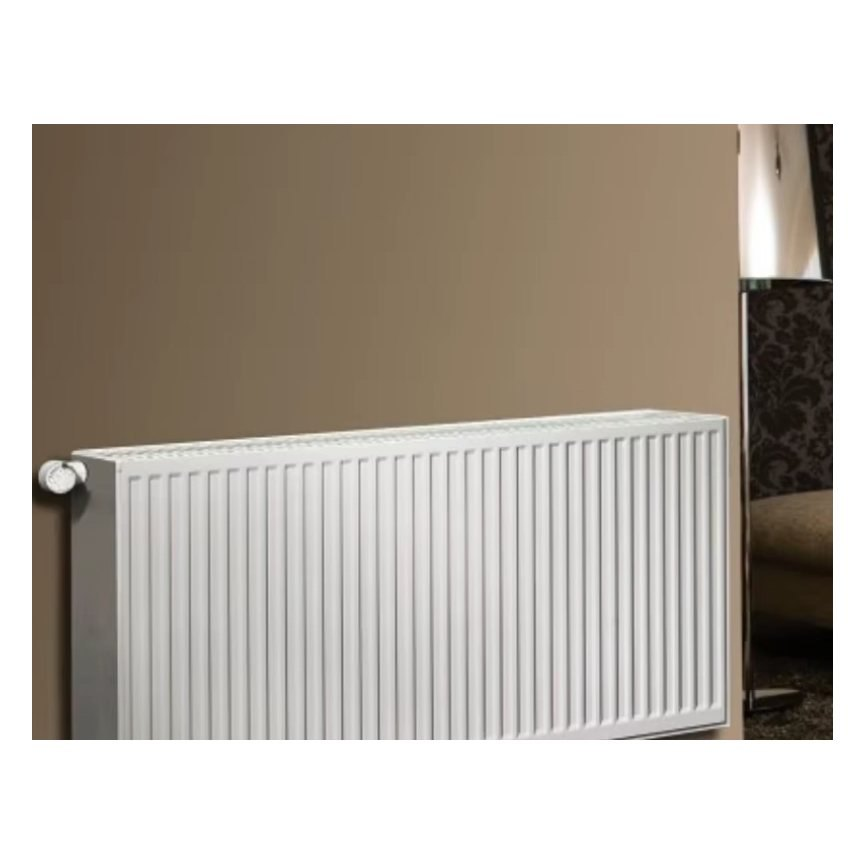

Home / HVAC, Heating & Water Pumps / Ceramic PTC fan heater 2000 W (tip-over protection)

Illustration similar – shows the product type.
HVAC, Heating & Water Pumps
Ceramic PTC fan heater 2000 W (tip-over protection)
Compact fan heater with PTC ceramic element for fast room heating.
The fan heater uses a self-regulating PTC ceramic element and delivers 1200 or 2000 W in two stages. Tip-over and overheating protection are mandatory, a thermostat improves efficiency. CE, RoHS and ElektroG registration are required for the EU.
Technical data
| Power | 1200 / 2000 W |
|---|---|
| Element | PTC ceramic |
| Voltage | 230 V, 50 Hz |
| Protection | Tip-over and overheat protection |
| Customs tariff number (HS) | 85162991 |
EU standards and regulations
GPSR (EU) 2023/988Product safety, EU responsible person mandatoryLVD 2014/35/EULow Voltage Directive, CE markingEMC 2014/30/EUElectromagnetic compatibilityRoHS 2011/65/EURestriction of hazardous substancesElektroG / WEEERegistration with stiftung earEcodesign (EU) 2015/1188Ecodesign for local space heaters
Goes well with

More products in this category

Mobile air conditioner 2.6 kW (monoblock)Mobile monoblock air conditioner for cooling, ventilating and dehumidifying offices, site cabins and work rooms.
Split air conditioner 3.5 kW (wall-mounted, inverter, R32)Permanently installed inverter split air conditioner with a wall-mounted indoor unit for cooling and heating offices, meeting and break rooms and site accommodation.
Diesel construction heater 20-30 kW (indirect fired, with flue)Mobile, indirect-fired diesel/kerosene forced-air heater with flue connection for structural drying and winter construction.
Gas-fired heating cannon 30 kW (propane, direct fired)Mobile, direct-fired propane heating cannon with fan for quickly heating large, well-ventilated halls, shells and tents.
Submersible dirty-water pump 1.1 kWRobust 230 V submersible pump for draining dirty water with solids, IPX8 with float switch.
Submersible clear-water pump 0.75 kW (230 V)Compact 230 V submersible pump with float switch for clean to slightly turbid water without coarse solids, e.g. for transferring, draining and irrigation.
Petrol engine water pump 3 inch (6.5-7.5 HP)Self-priming 3-inch engine pump with a 4-stroke petrol engine for large water volumes, independent of the mains.
Construction dehumidifier (condensation dryer) 50 l/dayRobust condensation dryer for construction and water-damage drying with 50 l/day dehumidification capacity.
Window seal kit for portable air conditioners (polyester set with zipper and hook-and-loop, about 400 cm perimeter)Textile window seal with zipper and hook-and-loop that routes the exhaust hose of a portable air conditioner through the window and keeps warm air and insects out.
Mini condensate pump for air conditioners and construction dryers (230 V, about 1 l tank pump)Compact tank pump that automatically lifts condensate from split air conditioners and dehumidifiers to a drain when gravity drainage is not possible.
Air conditioner installation kit 5 m (insulated twin copper line 1/4 + 3/8 inch with flare nuts)Ready-insulated copper pipe pair for the refrigerant line between the indoor and outdoor unit of a split air conditioner, 5 m long.
Pump connection set: layflat hose 20 m with Storz C couplings (2 inch / 52 mm)Ready-made, flat-folding discharge hose with Storz C couplings for submersible and engine pumps, 20 m long.

Steel panel radiator type 22, 600 mm highHot-water panel radiator with two panels and convector fins.
Electric instantaneous water heater 3.5–5.5 kW (shower/kitchen)
Garden surface pump 800–1000 W (self-priming)Self-priming centrifugal pump for irrigation and rainwater.
Electric heated towel radiator 500 W (bathroom, thermostat)Wall-mounted electric bathroom radiator with thermostat.
Programmable room thermostat (Wi-Fi, 230 V, 16 A)Weekly-programme thermostat for heating or floor heating.

Inline duct fan 150 mm (extract, duct fan)Quiet duct fan for bathroom, kitchen and hydroponics.